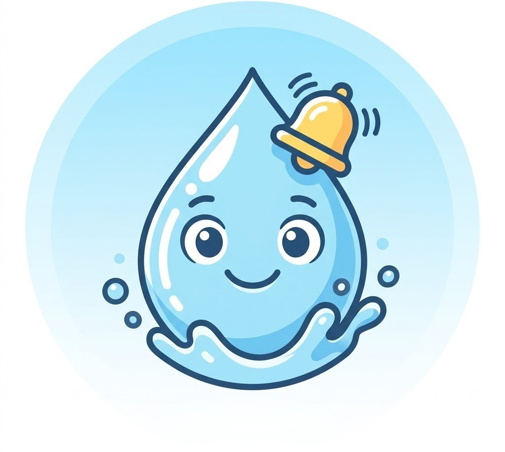
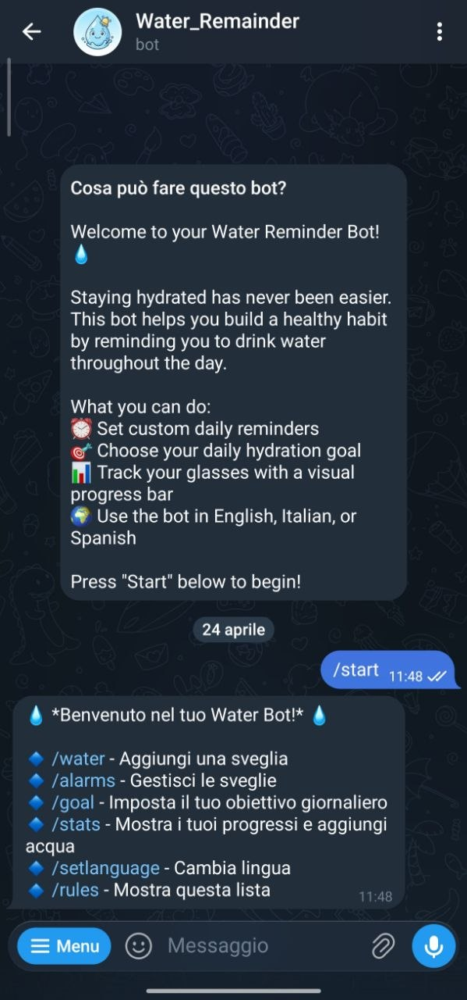
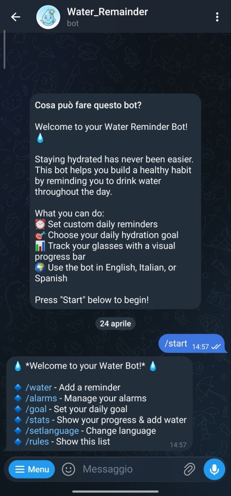

Water Reminder Bot
Tracciamento dell'idratazione tramite Telegram API & Cloudflare Workers Hydration tracking via Telegram API & Cloudflare Workers
Descrizione del Progetto Project Description
Un assistente virtuale intelligente progettato per combattere la disidratazione quotidiana. Il bot non si limita a inviare semplici notifiche, ma gestisce un vero e proprio ciclo di conferma con timer di scadenza, garantendo che l'utente interagisca attivamente con il promemoria. A smart virtual assistant designed to combat daily dehydration. The bot doesn't just send simple notifications; it manages a true confirmation cycle with an expiration timer, ensuring the user actively interacts with the reminder.
Tecnologie Utilizzate Technologies Used
- JavaScript (ES6+)
- Cloudflare Workers (Serverless)
- Cloudflare KV (NoSQL Database)
- Telegram Bot API


Funzionalità Chiave Key Features
Sveglie Multiple Multiple Alarms
Gestione di promemoria illimitati con selezione interattiva ogni 5 minuti. Management of unlimited reminders with interactive 5-minute interval selection.
Barra di Progresso Progress Bar
Visualizzazione grafica dei bicchieri bevuti rispetto all'obiettivo giornaliero. Graphical display of glasses consumed compared to the daily goal.
Timeout Logic
Sistema di conferma con scadenza a 4 minuti per massimizzare l'efficacia. Confirmation system with a 4-minute expiration to maximize effectiveness.
Multi-lingua Multi-language
Supporto nativo per Italiano, Inglese e Spagnolo. Native support for Italian, English, and Spanish.